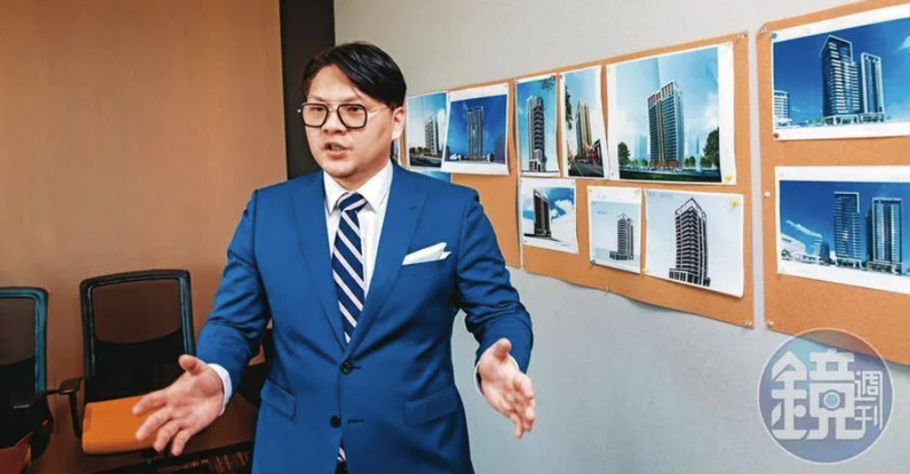

3年前國民零食「乖乖」被神祕買主「三地集團」併購，讓各界注意到這家低調企業。本刊調查，發跡於高雄的三地集團，是靠著土地重劃起家，近年來一路拿下高雄客運、乖乖食品、南仁湖與北基加油站等老牌本土企業，讓人側目。究竟他們是如何發跡致富，一連串併購的背後盤算又是什麼？三地集團二代鍾育霖在高雄總部，接受本刊專訪，親自揭開三地集團的神祕面紗。
鍾育霖 小檔案現職：鍾育霖小檔案
年齡：37歲
家庭：已婚
學歷：道明中學、加拿大英屬哥倫比亞大學食品營養系
經歷：三地建築董事長、三嘉開發董事長
「 這個建案的容積率…」5月上旬，在高雄捷運橘線信義國小站旁，一棟商辦大樓裡，一名身著藍色西裝，戴著黑框金邊眼鏡，年紀僅30多歲的男子，跟2名同事正在商討總銷數十億元的新建案規劃，在氣氛嚴肅的辦公空間裡，辦公桌上卻放著形象迥異的國民零食乖乖。
二代操盤 行事低調他是三地集團的二代、現任執行長鍾育霖，一般人對這個名字或許陌生，但細數近年被三地併購的企業，都是家喻戶曉。從高雄客運、北基加油站，到2019年底買下爆發家變的乖乖食品，又再吃下經營屏東海生館的南仁湖企業，三地彷彿橫空出世一般，屢屢成為神祕買家躍上新聞版面。

今年以來，三地又宣布旗下北基加油站要跟綠能大廠台達電聯手建置電動車充電樁，緊接著又投資了台南將軍、七股的漁電共生案，4月，集團創辦人，也是鍾育霖的父親鍾嘉村，又花了8.5億元，買下台南武聖夜市2,000多坪土地，震驚南台灣。
豪砸重金不眨眼，不僅讓外界咋舌三地集團的財務實力，也對於它的併購策略如霧裡看花，從地產跨足觀光、交通、食品，現在甚至要做起最夯的綠色能源，可以說是無所不買、無所不投。
「盡量低調！盡量低調！」從買下國民食品「乖乖」開始，三地集團就已經被各家媒體盯上，全都放在鍾嘉村驚人的土地煉金術。事實上，目前的三地集團已經由掛名執行長的鍾育霖統籌操盤，不過，就在接受本刊專訪時，父親還特地打電話關切，再三叮嚀他要保持低調。
土地重劃 白手起家今年還不滿40歲的鍾育霖，二十幾歲的時候就跨入房地產業，形容自己行事作風老派，每天一定要讀四大報，最愛穿長袍，喜歡看古書及漫畫。談起自己常上新聞，「10年前，我什麼都不是，現在突然變成富二代。」鍾育霖自嘲。
原來，從事土地重劃，自高雄發跡的三地集團，雖然旗下已有3家上市公司，集團年營收達120億元，但照鍾育霖的說法，他們是徹頭徹尾的白手起家，創業時員工才10多人，現在已有近5,000名員工。
「我們家族是在屏東種檳榔的。」鍾育霖坦言，父親早年創業過很多次，有失敗也有成功，1998年舉家移民加拿大前，因持有具固定收益的資產，才讓他們在國外生活無虞。直到2008年，鍾嘉村回台創立三地，並做起土地重劃生意。
事實上，從事土地重劃，眼光、時間、金錢缺一不可，一但土地成功變更，價值翻倍利益相當可觀，交友廣闊的鍾嘉村， 約20年前，獲得媒體圈2位大老闆年代董事長練台生與三立董事長林崑海青睞，一起投資成立三禾資產，在南台灣四處獵樓獵地，外界最熟知的案子，就是在法拍市場標下知名地標高雄八五大樓內的「建台百貨」。不過，鍾育霖對本刊強調：「父親已退出三禾，目前集團所有事業都是獨資。」
步入瓶頸 轉型併購而最讓鍾育霖印象深刻的父親代表作，是拿下高達22公頃的高雄41期重劃區，也就是現在的高雄文山特區。「這塊區域的土地，重劃前一坪才十萬元，不到10年時間，就翻了至少9倍，我們手上還有那裡的土地。」
除了被鍾育霖形容為很神奇的文山特區外，他也透露，目前三地手中握有可立即開發的土地，就多達10萬坪，除了南台灣的高雄、台南外，甚至還向北插旗到鶯歌鳳鳴重劃區，在當地持有3,000多坪土地。
外界也相當好奇，既然土地重劃做得順風順水，為何三地卻從5年前開始四處併購老牌企業？「現在幾乎做不到土地重劃了，所以需要轉型。」原來，各地方政府都在進行市地重劃，卻逐步把土地重劃主導權從民間拿回來，讓公司發跡的事業遇上了瓶頸，鍾育霖就把腦筋動到企業併購。
「我們都買有狀況的公司。」鍾育霖開宗明義地強調三地的併購策略絕對不是如外界所說只在乎土地價值，而是以有家族紛爭、股權爭議等「問題公司」為主。
原來，5年前，鍾育霖苦思如何讓集團轉型，卻因緣際會買下了連年虧損的高雄客運，讓他學習到併購企業的賺錢哲學。鍾育霖購入高雄客運後發現，台灣老牌傳產公司，都有相當優勢，只是需要有人整合。接手高雄客運後，鍾育霖第一步，就是清理不適當的人員，釐清財務狀況，並留用專業經理人，為基層員工加薪。「靠著重整人事、資產、財務，讓公司變乾淨。」鍾育霖說。
接著，才評估把哪些賠錢路線收掉，哪些精華區站體可開發，一步步照順序來，竟讓高雄客運轉虧為盈，這也啟發了鍾育霖，甚至成立併購團隊，要把這套改造手法，複製到下一家併購企業上。
旗下產業 改革活化但隔行如隔山，他如何領導統御？「基本上都交給專業經理人，像是乖乖現任總經理廖宇綺是創辦人的孫子，而經營海生館跟國道休息站的南仁湖，前副董事長鄭宜芳也留任。」
根據了解，去年轉虧為盈的乖乖食品，未來將進行更多的品牌授權，同時，也要推出高端定位的嬰兒食品；原先是傳統加油站的北基，也正往綠色能源領域前進，除做電動車充電樁外，「我們也在做太陽能板、漁電共生，如果完成了，我們可能是台灣最大的漁電共生公司。」
至於旗下客運事業，第一步要將600多台客運巴士全數換為電動車；第二步則是要讓舊資產活化，依屬性開發為商用不動產或是一般住宅。談起每一個事業體，鍾育霖都有番獨到見解，並不只想當個出資者，他說：「我們要讓所有產業再轉型一次。」